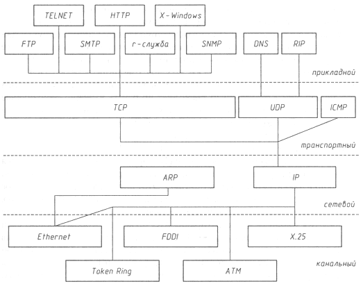
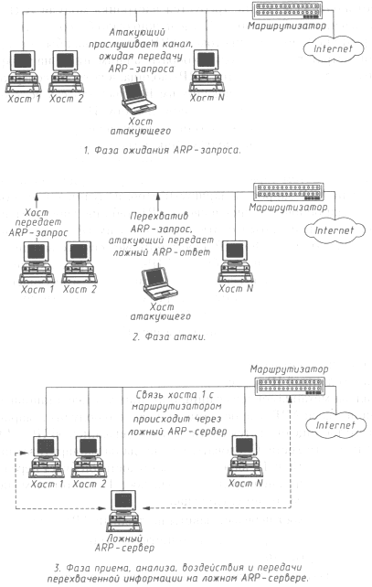
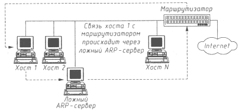

Безопасность >>>
АТАКА НА INTERNETЛожный ARP-сервер в сети Internet
Как уже неоднократно подчеркивалось, в вычислительных сетях связь между двумя удаленными хостами осуществляется путем передачи по сети сообщений, которые заключены в пакеты обмена. Как правило, такой пакет независимо от используемого протокола и типа сети (Token Ring, Ethernet, X.25 и др.) состоит из заголовка и поля данных. В заголовок пакета обычно заносится служебная информация, необходимая для адресации пакета, его идентификации, преобразования и т.д.; такая информация определяется используемым протоколом обмена. В поле данных помещаются либо непосредственно данные, либо другой пакет более высокого уровня OSI. Так, например, пакет транспортного уровня может быть помещен в пакет сетевого уровня, а тот, в свою очередь, вложен в пакет канального уровня. Спроецировав это утверждение на сетевую ОС, использующую протоколы TCP/IP, можно утверждать, что пакет TCP (транспортный уровень) помещен в пакет IP (сетевой уровень), вложенный в пакет Ethernet (канальный уровень). Структура TCP-пакета в Internet выглядит следующим образом:
Иерархия протоколов сети Internet в проекции на модель OSI приведена на рис. 4.2.  Рис. 4.2. Иерархия протоколов сети Internet в проекции на модель OSI Данный рисунок требует некоторого уточнения. Здесь показано, на каких протоколах (TCP или UDP) обычно - по умолчанию - реализованы прикладные службы. Но это отнюдь не означает, что не существует, например, реализаций FTP на базе UDP - в стандартном файле /etc/services в ОС FreeBSD дается перечень возможных реализаций прикладных служб как на основе протокола TCP, так и протокола UDP. Рассмотрим схему адресации пакетов в Internet и возникающие при этом проблемы безопасности. Как известно, базовым сетевым протоколом обмена в Internet является протокол IP (Internet Protocol). Протокол IP -это межсетевой протокол, позволяющий передавать IP-пакеты в любую точку сети. Для адресации на сетевом уровне (IP-уровне) в Internet каждый хост имеет уникальный 32-разрядный IP-адрес. Для передачи IP-пакета на хост в IP-заголовке пакета в поле Destination Address необходимо указать IP-адрес данного хоста. Однако, как видно из структуры TCP-пакета, IP-пакет находится внутри аппаратного пакета (если среда передачи - Ethernet, IP-пакет находится внутри Ethernet-пакета), поэтому каждый пакет в сетях любого типа и с любыми протоколами обмена в конечном счете посылается на аппаратный адрес сетевого адаптера, непосредственно осуществляющего прием и передачу пакетов в сети (в дальнейшем мы будем рассматривать только Ethernet-сети). Из всего вышесказанного следует, что для адресации IP-пакетов в Internet кроме IP-адреса хоста необходим еще либо Ethernet-адрес его сетевого адаптера (в случае адресации внутри одной подсети), либо Ethernet-адрес маршрутизатора (в случае межсетевой адресации). Первоначально хост может не иметь информации о Ethernet-адресах других хостов, находящихся с ним в одном сегменте, в том числе и о Ethernet-адресе маршрутизатора. Следовательно, хост должен найти эти адреса, применяя алгоритмы удаленного поиска (о них мы говорили в главе 3). В сети Internet для решения этой задачи используется протокол ARP (Address Resolution Protocol), который позволяет получить взаимно однозначное соответствие IP- и Ethernet-адресов для хостов, находящихся внутри одного сегмента. Это достигается следующим образом; при первом обращении к сетевым ресурсам хост отправляет широковещательный ARP-запрос на Ethernet-адрес FFFFFFFFFFFFh, где указывает IP-адрес маршрутизатора и просит сообщить его Ethernet-адрес (IP-адрес маршрутизатора является обязательным параметром, который всегда устанавливается вручную при настройке любой сетевой ОС в Internet). Этот широковещательный запрос получат все станции в данном сегменте сети, в том числе и маршрутизатор. Получив такой запрос, маршрутизатор внесет запись о запросившем хосте в свою ARP-таблицу, а затем отправит ARP-ответ, в котором сообщит свой Ethernet-адрес. Полученный в ARP-ответе Ethernet-адрес будет занесен в ARP-таблицу, находящуюся в памяти операционной системы на запросившем хосте и содержащую записи соответствия IP- и Ethernet-адресов для хостов внутри одного сегмента. Отметим, что в случае адресации к хосту, расположенному в той же подсети, также используется ARP-протокол, и рассмотренная выше схема полностью повторяется. Как указывалось ранее, при использовании в распределенной ВС алгоритмов удаленного поиска существует возможность осуществления в такой сети типовой удаленной атаки "ложный объект РВС". Анализ безопасности протокола ARP показывает, что, перехватив на атакующем хосте внутри данного сегмента сети широковещательный ARP-запрос, можно послать ложный ARP-ответ, в котором объявить себя искомым хостом (например, маршрутизатором), и в дальнейшем активно контролировать сетевой трафик дезинформированного хоста, воздействуя на него по схеме "ложный объект РВС". Рассмотрим обобщенную функциональную схему ложного ARP-сервера (рис. 4.3):
 Рис. 4.3. Ложный ARP-сервер Данная схема атаки требует некоторого уточнения. На практике мы столкнулись с тем, что даже очень квалифицированные сетевые администраторы и программисты часто не знают или не понимают тонкостей работы протокола ARP. При обычной настройке сетевой ОС, поддерживающей протоколы TCP/IP, не требуется настройка модуля ARP (нам не встречалось ни одной сетевой ОС, где нужно было бы создавать ARP-таблицу "вручную"), поэтому протокол ARP остается как бы "прозрачным" для администраторов. Необходимо обратить внимание и на тот факт, что у маршрутизатора тоже имеется ARP-таблица, в которой содержится информация об IP- и соответствующих им Ethernet-адресах всех хостов из сегмента сети, подключенного к маршрутизатору. Информация в эту таблицу на маршрутизаторе также обычно заносится не вручную, а при помощи протокола ARP. Именно поэтому так легко в одном сегменте IP-сети присвоить чужой IP-адрес: выдать команду сетевой ОС на установку нового IP-адреса, потом обратиться в сеть - сразу же будет послан широковещательный ARP-запрос, и маршрутизатор, получив такое сообщение, автоматически обновит запись в своей ARP-таблице (поставит Ehternet-адрес вашей сетевой карты в соответствие с чужим IP-адресом), в результате чего обладатель данного IP-адреса потеряет связь с внешним миром (все пакеты, адресуемые на его бывший IP-адрес и приходящие на маршрутизатор, будут направляться им на Ethernet-адрес атакующего). Правда, некоторые ОС анализируют все передаваемые по сети широковещательные ARP-запросы. Например, ОС Windows 95 или SunOS 5.3 при получении ARP-запроса с указанным в нем IP-адресом, совпадающим с IP-адресом данной системы, выдают предупреждающее сообщение о том, что хост с таким-то Ethernet-адресом пытается присвоить себе (естественно, успешно) данный IP-адрес. Из анализа механизмов адресации, описанных выше, становится ясно: так как поисковый ARP-запрос кроме атакующего получит и маршрутизатор, то в его таблице окажется соответствующая запись об IP- и Ethernet-адресе атакуемого хоста. Следовательно, когда на маршрутизатор придет пакет, направленный на IP-адрес атакуемого хоста, он будет передан не на ложный ARP-сервер, а непосредственно на хост. При этом схема передачи пакетов в этом случае будет следующая:
В этом случае последняя фаза, связанная с приемом, анализом, воздействием на пакеты обмена и передачей их между атакованным хостом и, например, маршрутизатором (или любым другим хостом в том же сегменте) будет проходить уже не в режиме полного перехвата пакетов ложным сервером (мостовая схема), а в режиме "полуперехвата" (петлевая схема). Действительно, в режиме полного перехвата маршрут всех пакетов, отправляемых как в одну, так и в другую сторону, обязательно проходит через ложный сервер (мост); в режиме "полуперехвата" маршрут пакетов образует петлю (рис. 4.4). Петлевой маршрут может возникнуть и при рассмотренной ниже атаке на базе протоколов DNS и IСМР.  Рис. 4.4. Петлевая схема перехвата информации ложным ARP-сервером Однако придумать несколько способов, позволяющих ложному ARP-серверу функционировать по мостовой схеме перехвата (полный перехват), довольно просто. Например, получив ARP-запрос, можно самому послать такое же сообщение и присвоить себе данный IP-адрес (правда, в этом случае ложному ARP-серверу не удастся остаться незамеченным: некоторые сетевые ОС, например Windows 95 и SunOS 5.3, перехватив такой запрос, выдадут предупреждение об использовании их IP-адреса). Другой, значительно более удобный способ - послать ARP-запрос, указав в качестве своего IP-адреса любой свободный в данном сегменте IP-адрес, и в дальнейшем вести работу с данного IP-адреса как с маршрутизатором, так и с "обманутыми" хостами (кстати, это типичная proxy-схема). Заканчивая рассказ об уязвимостях протокола ARP, покажем, как различные сетевые ОС используют этот протокол для изменения информации в своих ARP-таблицах. Исследования различных сетевых ОС выявили, что в ОС Linux при адресации к хосту, находящемуся в одной подсети с данным хостом, ARP-запрос передается, если в ARP-таблице отсутствует соответствующая запись о Ethernet-адресе, и при последующих обращениях к данному хосту ARP-запрос не посылается. В SunOS 5.3 при каждом новом обращении к хосту (в том случае, если в течение некоторого времени обращения не было) происходит передача ARP-запроса, и, следовательно, ARP-таблица динамически обновляется. ОС Windows 95 при обращении к хостам, с точки зрения использования протокола ARP, ведет себя почти так же, как и ОС Linux, за исключением того, что периодически (каждую минуту) посылает ARP-запрос о Ethernet-адресе маршрутизатора; в результате в течение нескольких минут вся локальная сеть с Windows 95 без труда берется под контроль ложным ARP-сервером. ОС Windows NT 4.0 также использует динамически изменяемую ARP-таблицу, и ARP-запросы о Ethernet-адресе маршрутизатора передаются каждые 5 минут. Особый интерес вызвал следующий вопрос: можно ли осуществить данную удаленную атаку на UNIX-совместимую ОС CX/LAN/SX, защищенную по классу В1 (мандатная и дискретная сетевая политики разграничения доступа плюс специальная схема функционирования SUID/SGID процессов), установленную на двухпроцессорной мини-ЭВМ? Эта система является одним из лучших в мире полнофункциональных межсетевых экранов (МЭ) CyberGuard 3.0 (мы тестировали этого "монстра" в 1996 году). В процессе анализа защищенности этого МЭ относительно удаленных воздействий, осуществляемых по каналам связи, выяснилось, что в случае базовой (после всех стандартных настроек) конфигурации ОС защищенная UNIX-система также поражается ложным ARP-сервером (что, в общем, было вполне ожидаемым). В заключение отметим, что, во-первых, причина успеха данной удаленной атаки кроется не столько в Internet, сколько в широковещательной среде Ethernet, а во-вторых, эта атака является внутрисегментной и представляет для вас угрозу только в том случае, если атакующий находится внутри вашего сегмента сети. Однако не стоит полагать, что из-за этого атака не представляет опасности, так как по статистике нарушений информационной безопасности вычислительных сетей известно, что большинство состоявшихся взломов производилось именно собственными сотрудникам компаний. Причины понятны: осуществить внутрисегментную удаленную атаку значительно легче, чем межсегментную. Кроме того, практически все организации имеют локальные сети (в том числе и IP-сети), хотя далеко не у всех они подключены к сети Internet. Это объясняется как соображениями безопасности, так и отсутствием у организации необходимости такого подключения. И наконец, сотрудникам, знающим тонкости своей внутренней вычислительной сети, гораздо легче осуществить взлом, чем кому бы то ни было. Поэтому администраторам безопасности нельзя недооценивать данную удаленную атаку, даже если ее источник находится внутри их локальной IP-сети.
|